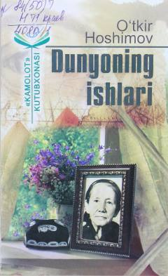

DIO'tkir Hoshimovning ona sevgisiga bag'ishlangan qissa va hikoyalar to'plami.
O'zbekiston xalq yozuvchisi O'tkir Hoshimovning 'Dunyoning ishlari' asari qissa va hikoyalar to'plamidir. Asarda ona siymosi markaziy o'rin tutib, hayotiy va jonli tasvirlar orqali o'zbek oilasi, insoniy qadriyatlar va turmush voqealari aks ettirilgan. Har bir novella o'quvchiga hayotiy xulosa va tarbiyaviy saboq beradi.